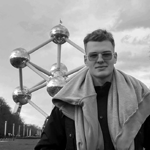
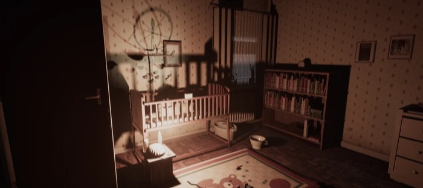
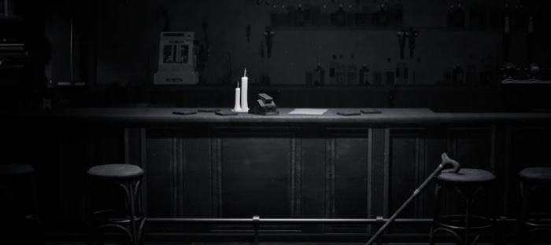
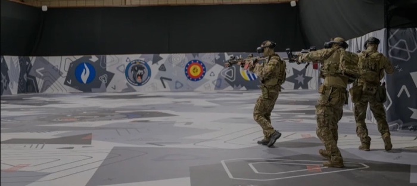

Freelance Sound Designer & Audio Programmer 2026 – present
WeirdJohnny Studios: sound design, a sound effects package (NDA).
Technical Sound Designer / Audio Programmer
Looking for studio roles and freelance projects

igorszuniewicz.com igorszuniewiczwork@gmail.com +48 605 117 516 linkedin.com/in/igorszuniewicz
Graz, Austria – open to relocate
Master, Sound Design, FH Joanneum/HUSHABYE/Freelance

Voice-controlled horror, all disciplines: Unity 6, C#, Wwise, DSP.

Sole audio designer: 200+ Wwise events, VO, enemy-distance mix.

Weapon audio system, in-headset Steam Audio spatialisation.
WeirdJohnny Studios: sound design, a sound effects package (NDA).
Police, military and customs VR training; Taser T10 sounds.
Event-to-playback latency: Unreal client, Python server, cache, synthesis fallback. 68 pages.